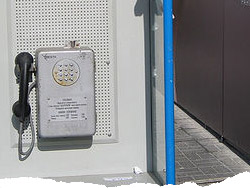

 image: Michael N“The fighter for world justice.”
“Cool, someone has thrust something into the coin slot!,” the girl lisped and hit the coin slot with the receiver. He was startled and didn’t immediately understand what was going on. He stood a few steps behind her, awaiting his turn to use the phone. “Is it damaged?,” he asked in a second. “Screw them!,” she said without paying attention to the man and continued showering abuses against the unknown culprit. Then she turned to the man behind her, looked at him severely as if he was involved in the embarrassing situation and moved away with a theatrical walk.
He has not looked at her but approached the phone quickly to see a crushed sheet of paper stuck into the slot. He tried to pull it out but did not manage to. Only now did he realized what the girl was so upset about, and turned to see if she was still around. She was not there, and there was not other phone around, but the call he had to make could not wait. He searched for something thin in his pockets that he could use to pick out the ball stuck in the slot. The only thing that seemed somewhat appropriate was his keys but unfortunately none of them would fit. He leaned forward to study the object carefully. It was white, long about a centimeter and half, and burned at one end. It was a cigarette stub, of course it was a stub. Whoever stuck it in there crashed it first so that it could go through the slot, and now the stub had regained its former size and was stuck. “How can someone stick stubs in the telephone slot!” — he got angry in a somewhat dignified manner, but was still really angry. “What if somebody needs to make an urgent call” — he continued to look at the ground continuing with his thoughts. A pin, a paper clip, a piece of wire — he was looking for something with which to pick out that piece of trash. However, the only thing he found to his liking was a crushed plastic straw. With it he resumed his attempts to reach the intruder; the stub was stubbornly trying to resist. He was entirely engrossed in his mission. This stub was not only his own problem, it was the stub which interferes with the normal development of life. There is always such a small stub that spoils everything. He thought that it was not a bad theme for an article — the stub which … damn it.
He felt he was sweating, he took off his jacket, and squeezed it between his knees so that both his hands could be free. In a few minutes he raised his head to rest but also to enjoy his partial success — he had managed to peel of the paper from the stub, now only the beige spongy body of the stub remained in the slot. Maybe he should pour some water to get it wet — it might get out more easily that way? He looked around, thought of how this might look from the side, then spat into the slot, and continued to reach with the straw. Fiber by fiber the stub was falling apart. He was coming closer with each second. His fierceness was growing, the tip of his tongue was showing between his closed lips, his jacket was down at his ankles. He suddenly froze, put the straw on the phone, and carefully, in a surgical like manner, caught the sticking out piece of the stub with the tip of his nails. Then slowly and triumphantly he pulled it out of the slot. He took a deep breath and smiled. The good triumphed despite all setbacks. Even stubs, and people who stick them in street phones slots could not stop the good ones.
He looked at his watch. His call was more than half an hour late and there was hardly a chance of someone still waiting for him, but he still felt he should try. He took out the coin from his pocket, put it in the slot, it fell into the coin chamber with a clang, and … nothing showed on the display. He knocked on it. He then hit it on the side with his fist. The coin was gone for good in the steel body of the phone. God knows how many coins this phone had swallowed before someone felt obliged to stop the injustice by sticking a stub into the slot. And he lost so much precious time to pull it out. He was now looking for something on the ground. He found it. He leaned, took it in his hand, crushed it, and stuck it into the coin slot. One small stub again took on the role of savior, martyr, in the greedy coin slot. He thought to himself, “Hopefully, the next person trying to make a call will not understand the world order so one-sidedly.”
referenced works
- “Patriarch Evtimii” or also known as “The Priest” is a popular little square in downtown Sofia. It owes its name to the centrally located sculpture of Patriarch Evtimii – one of the greatest Bulgarians and Medieval personalities, Bulgaria’s best known Patriarch and the last head of the Bulgarian Orthodox Church during the Second Bulgarian Monarchy. The sculpture was created by the artist Marko Markov and was placed in the square’s center in 1939. The square is known as a convenient location for people wanting to meet somewhere in downtown Sofia. The square is the crossing of three of Sofia’s main thoroughfares: “Vasil Levski” boulevard, “Graf Ignatiev” street and “Patriarch Evtimii” boulevard. Some of Sofia’s best-known sites such as the “Slaveykov” square, the National Place of Culture, the National “Vasil Levski” Stadium are also located in the square’s close vicinity. ↩
location information
- Name: the blue telephone cabin
- Address: Patriarh Evtimii
- Time of story: Afternoon
- Latitude: 42.717002
- Longitude: 23.336506
- Map: Google Maps

Write for Us!
We’re looking for short narratives describing pivotal moments of elation, confusion, absurdity, love or grief — or anything in between — inseparably tied to a specific place in Sofia.
Sofia:
Or receive updates by email
Addresses only used for the occational hitotoki mailing. Will not be sold to the crazy people on tram N22.
A list of all available RSS feeds is on the about page
commentary